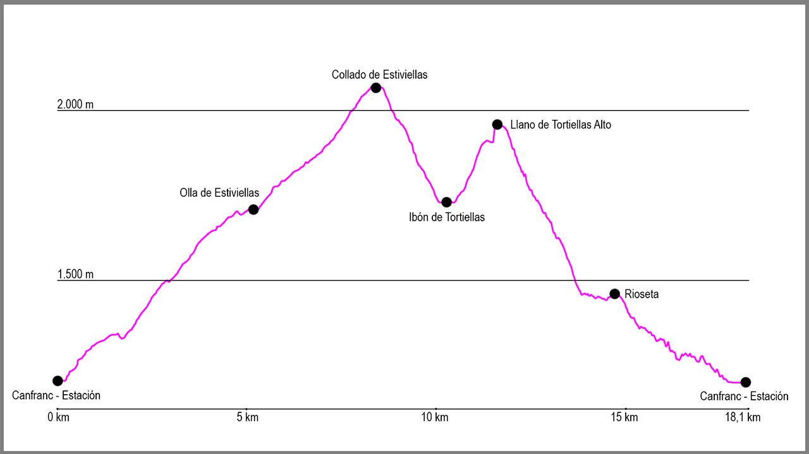

Desde el puente de la Estación de Canfranc, cruzaremos la carretera hacia la iglesia, y a su izquierda cogeremos un camino que sale al final de las escaleras de acceso a la misma. Seguiremos este camino hasta llegar a un pequeño puente con la barandilla verde que cruzaremos y nada más pasarlo a nuestra derecha sale un sendero. Lo tomaremos y justo en este punto empezaremos la principal subida de la ruta, bastante cómoda y sencilla.
Durante la subida saldrán dos cruces a nuestra derecha que obviaremos y seguiremos hasta llegar a los restos del vivero de Secras. Aquí continuaremos de manera ascendente por el camino para llegar a la Olla de Estiviellas y seguiremos en dirección norte obviando el primer camino que sale a nuestra izquierda. Pasaremos el barranco para continuar hasta un segundo cruce, también a nuestra izquierda, que nos indica “Collado de Estiviellas”. Lo tomaremos y continuaremos nuestra suave ascensión.
Pasados ya cerca de 2 kilómetros desde el último cruce, veremos en una curva a la izquierda un cartel que nos marca al “Pico del Águila” en dirección a nuestra derecha. Obviaremos esta bifurcación siguiendo en dirección ascendente y enlazando curva tras curva hasta llegar a dar vista a todo el circo de la Garganta de Borau, Aspe y la zona de Tortiellas.
Justo al salir al collado, giraremos a nuestra izquierda para mantener la divisoria durante unos metros antes de empezar la bajada hacia el circo de Tortiellas. La primera parte tiene un claro camino, pero tras unas pocas “zetas” el camino gira 180 grados a la derecha y empieza a descender por una zona algo más rota hasta una pequeña campa. Nos dirigiremos hacia ella y justo al pasarla la ruta empieza a perder altura rápidamente en dirección al ibón de Tortiellas (seco).
Cuando lleguemos hasta él lo bordearemos por el noreste, nuestra derecha, para, al situarnos justo enfrente, empezar la subida hacia el llano de Tortiellas Alto. La subida no tiene clara la traza, por lo que deberemos de tomar de referencia dirección hacia Rioseta sin arrimarnos mucho al cortado, hasta que veamos unos postes metálicos y cojamos esa dirección. Una vez en ellos los pies nos llevarán hacia la izquierda para entrar a la estación de esquí de Candanchú, pero nosotros seguiremos los postes metálicos como si fueran hitos hasta que nos crucemos con un camino. En este momento lo tomaremos de manera descendente, y tras una primera parte de piedra y luego una zona de hierba, nos conducirá sin pérdida alguna hasta el campamento militar de Rioseta.
Una vez en la zona de edificios, lo bordearemos por la izquierda para salir a la carretera. Aquí la cruzaremos con atención y bajaremos por el arcén izquierdo hasta que lleguemos a la altura del Camino de Santiago, el cuál seguiremos hasta el punto de partida.
El recorrido cruza entonces la carretera para entrar en un bosque y tras bajar por él volveremos a cruzar la N330. Aquí desciende para coger una antigua carretera y seguir en dirección sur hasta el hotel Santa Cristina. Una vez pasado este punto descenderemos siempre paralelos a la carretera hasta la entrada a Canfranc-Estación y la llegada hasta la salida del recorrido.
